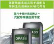
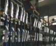
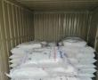

装饰镀 · 辅助系列 · 多型号覆盖
含五款产品，覆盖汽配长效到哑光珍珠镍，沙感明显、金属感强。

专为汽车配件研发的长效珍珠镍工艺。

专为汽车工业而开发，通过调整添加剂的混合比例和浓度，可做到从柔和光亮到粗哑的珍珠镍外观效果，镀层富有强烈的金属感，可满足众多汽车厂商的要求。

1.专为汽车配件而研发，沙感明显，金属感强。2.属长效体系，工艺稳定，能连续生产15-60天无需大处理，亦无需辅助设备。

1.属市场创新型三剂长效珍珠镍体系，镀层均匀，沙感明显，金属感强。2.不会出现脱皮、起泡或亮点等问题，镀液控制非常简单。

LY-S珍珠镍特别设计应用于汽配工业，镀层可由柔和光亮至全哑光，并富有强烈的金属感，客户根据不同颜色要求使用不同的沙剂。
中性无毒环保退镀剂，不伤挂具。

LY-N19为中性无毒环保退镀剂，工艺范围宽，退镀速度快，不伤挂具，能退除所有一般的电镀层。

SX-30A为中性无毒环保脱挂粉，工艺范围宽，退镀速度快，不伤挂具。